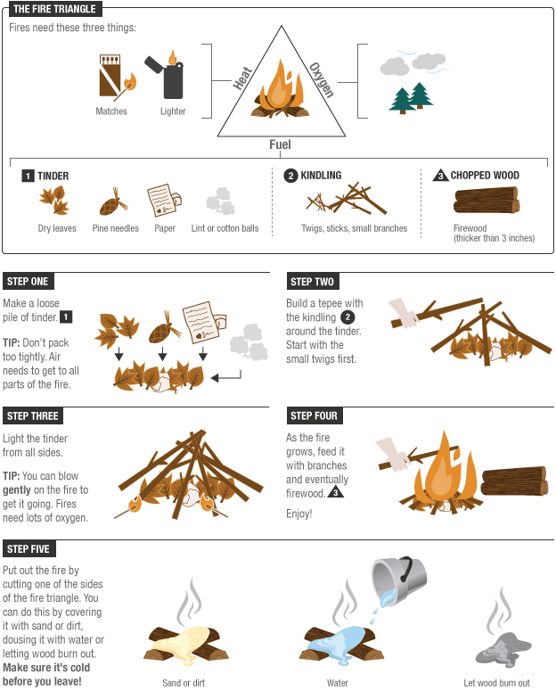

Start building the fire by creating a small pyramid or similar structure with tinder (small branches and dry grasses). Leave a bit of space to put a tinder nest under the tinder. Make it so that air can get underneath the structure you are building. Stack gradually larger pieces of wood on top until you have a decent size log on the upper layer. I like to make a pyramid shape with the pieces of wood. Light your tinder nest with a piece of charcoal or char cloth. Place that burning nest into the space at the very bottom of your fire structure. Wait and the fire should be blazing in no time.
